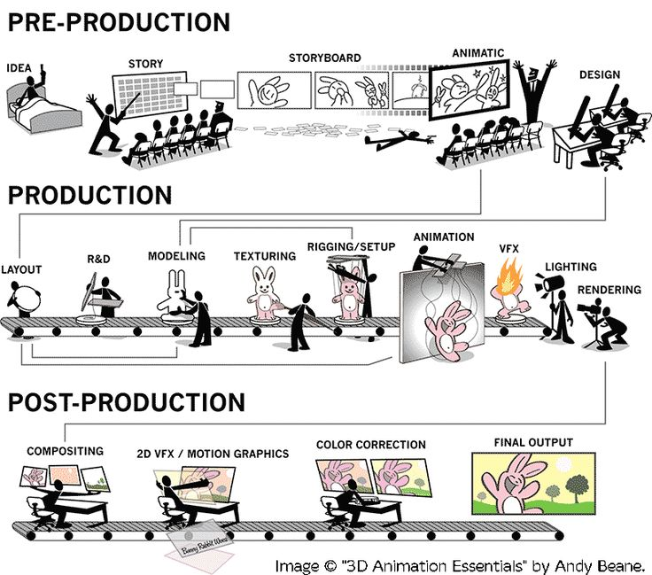
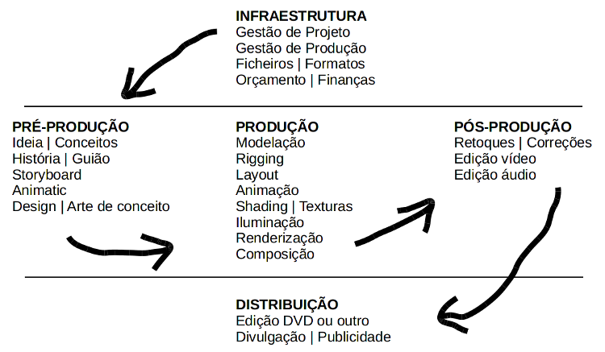
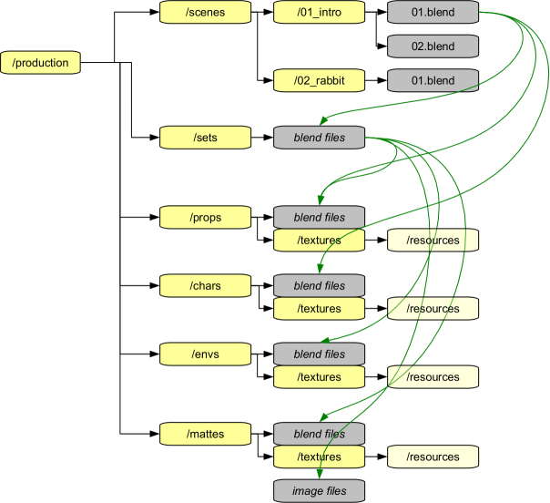

Pesquisar e conhecer trabalhos, autores, escolas, estúdios, correntes, etc. Conhecer a “cultura” e o “estado da arte” da área.
Pequeno caderno para desenhar ou registar ideias e conceitos para projetos em curso ou futuros. Os desenhos podem ser só esboços e rabiscos, são sobretudo auxiliares de memória "visuais".
Pequeno caderno com recortes e colagens de imagens e conceitos para referência ou inspiração em projectos em curso ou futuros.
Quadro com recolha de referências (i.e. imagens, textos, objectos) que estão relacionadas, influenciam ou inspiram o trabalho.
Visitar museus, festivais, exposições e galerias para experienciar ambientes repletos de criatividade, expandir horizontes, conhecer outros modos de ver e criar.
O meio digital veio ajudar, complementar mas não substituir. Visitem MESMO os espaços físicos.
Criar o hábito de explorar novas técnicas e novas ferramentas, descobrir e seguir tutoriais, ver e analisar timelapses, breakdowns ou making-of's..
Criar o hábito de estabelecer e cumprir prazos, seguir planos de trabalho. E explorar vias alternativas.
Se trabalha com meios digitais já deve ter percebido que é importante criar o hábito de gravar cedo e frequentemente. Criar o hábito de fazer cópias de segurança.
Utilizar o sistema de Layers e Scenes para organizar o seu trabalho. Optimize a área de trabalho e o desempenho do sistema informático "escondendo" o que é desnecessário.
Exemplo: não faz sentido estar a ver todas as árvores do parque que está a modelar se tiver a trabalhar no muro que envolve o parque... desative a layer onde armazenou as árvores.
Utilizar a funcionalidade Link para evitar duplicados e manter os ficheiros com a dimensão reduzida. Paralelamente, permite trabalho em simultâneo e evita que alguns artistas tenham de esperar pela conclusão do trabalho de terceiros.
Exemplo: pedro está a modelar um quarto e ana está a modelar a cama. Se a cama estiver "linkada" no ficheiro do quarto, pedro pode ir trabalhando e sempre que reabrir o ficheiro a cama vai ser atualizada para a versão mais recente.
Criar o hábito de gravar cedo e frequentemente. Criar o hábito de fazer cópias de segurança.
Opção para mover ficheiros entre computadores sem perder ficheiros dependentes (por exemplo, texturas). Depois de mover o ficheiro, é importante fazer "unpack" para criar as pastas originais e tornar o ficheiro mais leve (menos peso na memória do sistema).
Não misture ficheiros temporários, abandonados ou backups com ficheiros de produção. Se não está a ser utilizado, remova o ficheiro das pastas de produção.
Criar uma organização de pastas para armazenar os ficheiros e definir que tipo de ficheiros é armazenado em cada pasta. Este passo é importante para manter os caminhos relativos entre ficheiros e funcionar sem problemas com o Pack into Blend file e com Links.
Criar regras para o projeto (tipos de ficheiros, resolução, nomes dos ficheiros, etc.).
Algumas sugestões para nomes dos ficheiros:
Utilizamos workflow para designar o fluxo de trabalho ou a sequência de etapas. Na animação digital, o workflow é sustentado por uma infraestrutura tecnológica digital e implica um encadeamento de softwares (a pipeline).
Geralmente, as etapas da produção de animação digital são agrupadas em três momentos principais, seguindo a organização comum da produção cinematográfica e audiovisual:
A ideia é o ponto de partida do projeto. Pode ser original ou adaptada de algo já existente, pode ser espontânea ou encomendada, etc. É comum a ideia ser acompanhada de esquemas e quadros com referências (mood boards) permitindo explorar diferentes opções narrativas e estéticas.
É nesta etapa que a ideia evolui para uma estória e é produzido um guião. No final, é feito o script breakdown, etapa onde o guião é analisado e os vários elementos são marcados em cada cena permitindo extrair listas para a produção (por exemplo: lista de todos adereços do filme organizados por cena, lista dos efeitos sonoros do filme organizados por cena, etc.).
É a etapa de concept art e desenvolvimento visual.
É estudado, testado e definido o aspeto das personagens: aparências, proporções, poses, etc. O resultado desta etapa são as model sheets (também podem ser designadas por character board, character sheet ou character study). Em 2D, estes documentos permitem manter a continuidade das personagens, permitem uniformizar a aparência e poses das personagens que irão ser desenhadas e animadas por diferentes artistas. Em 3D, servem de referência para modelação e animação.
Etapa similar à anterior mas focada nos ambientes e cenários da animação. O design dos props (adereços) pertence a esta etapa.
Estudo, testagem e definição dos esquemas de cores.
Criação de uma sequência de imagens/ilustrações que permitem pré-visualizar a animação. É uma tradução do guião em formato gráfico.
É comum a gravação de vozes e criação de efeitos sonoros ser feita nas etapas iniciais porque estes servem depois também como referência e guiam os tempos na etapa de animação. Estes sons e vozes podem ainde ser melhorados ou até substituídos em etapas posteriores.
A Animatic é uma espécie de Storyboard animado. Visualmente aparenta ser um slideshow do Storyboard mas é acompanhado dos sons e vozes criados/gravados na etapa anterior. Permite sobretudo testar se a estória funciona, os tempos da narrativa e a versão preliminar das vozes/sons. Por vezes, em vez de Animatic encontramos a designação Leica Reel. Na realidade, Leica Reel é a designação mais tradicional ou antiga e deriva do nome das câmeras (Leica) utilizadas neste processo nos tempos mais antigos da animação.
Modelação de todos os elementos 3D.
Criação das armaduras e sua associação.
Criação do aspeto através da criação/aplicação de texturas e shaders.
Colocação dos elementos nas cenas. Por vezes, este trabalho é feito ainda com versões não finais (dos modelos e texturas/shaders).
Etapa onde são animados os elementos. A animação pode ser feita com versões mais próximas da final ou com elementos que irão ainda ser substituídos ou finalizados posteriormente.
Número mínimo de poses necessárias para contar a estória. A criação destas poses confunde-se muitas vezes com a etapa de Layout dado que esta é também definida como a etapa de criação das Poses-chave.
As poses extremas da ação ou movimento - os altos (highs) e baixos (lows) do movimento. Constituem um refinamento das Key Poses. Fazem parte do processo designado por blocking.
Poses que definem os arcos e sobreposição dos movimentos. Estão nos intervalo das Key e Extreme Poses. Constituem um refinamento das Key e Extreme Poses. Fazem parte do processo designado por blocking. Na animação por computador, esta etapa é muitas vezes concretizada pelo próprio computador através de interpolação, processo designado por tweening.
Animação direta (straight ahead) para garantir que movimentos são suaves e tempos e espaçamentos são adequados. Constituem um refinamento das Inbetweens. Fazem parte do processo designado por blocking. Quando a animação integra movimentos criados pelo computador (tweening), esta etapa é essencial para corrigir a animação automática.
Etapa em que são adicionados os efeitos visuais especiais (fogo, fumo, etc.). Pode implicar utilização de outras aplicações e de sistemas de simulação de física e partículas.
Criação dos sistemas de iluminação.
Exportação das frames da animação. É comum a exportação com render passes para permitir maior liberdade na etapa de composição. Dependendo da metodologia, processos e softwares adotados esta renderização pode incluir já trabalho de composição.
Verificação das frames e correções e ajustes finais.
Composição final dos renders. Esta etapa pode confundir-se com a renderização.
Criação de títulos, motion graphics e outros efeitos visuais finais.
Etapa de edição do filme onde as cores são trabalhadas com o intuito de reforçar/criar continuidade ou para efeito dramático.
Montagem dos vários planos e componente sonora.
São inseridos os sons e efeitos sonoros (foley). Geralmente, estes sons já estão feitos, são apenas inseridos no filme. Ainda assim, poderá ser necessário corrigir, melhorar ou inserir sons adicionais.
É inserida a componente musical. Geralmente, a música já existe (original ou adaptada), é apena inserida no filme. Ainda assim, poderá ser necessário corrigir, melhorar ou inserir música adicional.
Exportação final. Dependendo dos formatos, podem ser necessárias etapas adicionais.
Se tiver interesse em visualizar outros esquemas, sugere-se a consulta de Pipelines & Workflows @ Pinterest.
 Esquema de etapas retirado de Beane, A. (2012). 3D Animation Essentials. Indianapolis: Sybex.
 Esquema de etapas
Organizar um projeto de animação 3D não é uma tarefa trivial e tem uma importância fundamental. Uma boa organização é um requisito importante para qualquer projeto na área e é absolutamente imprescindível caso o projeto que envolva vários artistas. Gostaríamos de destacar aqui dois aspetos: estrutura das pastas e convenções.
Geralmente, um projeto nesta área envolve um enorme número de ficheiros de diversos tipos. Sem uma boa organização, é relativamente fácil perder imenso tempo a localizar recursos e destruir a linkagem entre ficheiros.
A imagem abaixo apresenta a estrutura de pastas utilizada nas curtas-metragens produzidas pela Blender Foundation e constitui um bom ponto de partida para uma organização simples e eficiente. As setas indicam a linkagem entre ficheiros.
 Imagem de Campbell Barton retirada da Blender Wiki
O texto que se segue foi adaptado do disponível na Blender Wiki
/production/scenes/SceneNumber_SceneName/ShotNumber.blend
/production/scenes/01_intro/01.blend
/production/scenes/01_intro/02.blend
/production/scenes/02_rabbit/01.blend
/production/sets/rabbit_house.blend
/production/sets/rabbit_house.blend
/production/props/apple.blend
/production/props/walnut.blend
/production/envs/tree_oak_01.blend
/production/envs/tree_pine_03.blend
/production/chars/rabbit.blend
/production/chars/chinchilla.blend
/production/mattes/skydome_afternoon.png
/production/mattes/forest_interior.blend
Utilizar uma estrutura similar à apresentada acima implica usar o sistema de linkagem do Blender. Para que funcione corretamente, é extremamente importante ser rigoroso na utilização das pastas e utilizar sempre caminhos (paths) relativos.
A utilização de convenções, regras partilhadas por todos os artistas que participam, é outra preocupação que deve existir desde o início. Num projeto de grupo, o ideal é estabelecer, logo no início, uma lista com um conjunto de regras e procedimentos que todos devem respeitar. Eis alguns exemplos: